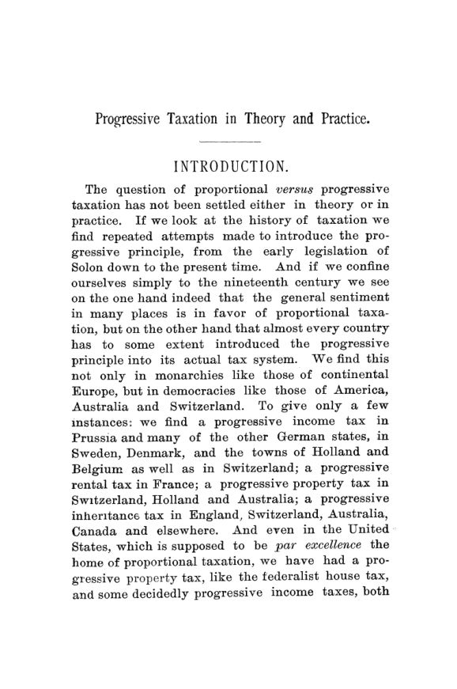

Seligman, 1894: o imposto progressivo é justo, mas cabe na prática?
Leitura: 12 min
Em 1894, Seligman revisou os impostos progressivos desde Sólon e todas as teorias a favor e contra. Concluiu que a progressão é defensável em tese, mas que quase nenhum imposto americano estava pronto para ela.


Turgot, o célebre ministro francês, recebeu certa vez um projeto de imposto progressivo e escreveu na margem:
“É preciso executar o autor, não o projeto” (“We must execute the author, not the project”)
Ele não estava sozinho. Quando o Parlamento inglês discutiu o primeiro imposto de renda, em 1799, Lord Auckland chamou a tributação graduada de revolucionária. O estadista alemão Gentz disse que ela não era muito melhor que um roubo comum. Para boa parte do século XIX, alíquota que sobe com a renda era sinônimo de socialismo e confisco.
Progressive Taxation in Theory and Practice, de Edwin R. A. Seligman, professor de economia política e finanças do Columbia College, saiu em janeiro e março de 1894, nos números 1 e 2 do volume 9 das Publications, das páginas 7 a 222. É uma resposta a esse pânico, mas não é um panfleto a favor. Seligman abre dizendo que a questão não estava resolvida nem na teoria nem na prática, e se propõe a reunir, pela primeira vez, os fatos e os argumentos de todas as escolas. Em 1892 ele perguntara quem de fato paga um imposto; agora pergunta quanto cada um deveria pagar.
Progressivo, regressivo, degressivo: qual a diferença?
O livro começa arrumando o vocabulário. Proporcional é a mesma alíquota para qualquer valor. Progressivo é a alíquota que sobe com a renda ou a propriedade. Regressivo é o inverso, a alíquota que cai à medida que a base cresce, o que os franceses chamavam de progressão às avessas. E degressivo é o caso intermediário: a alíquota sobe até um limite e dali em diante fica constante. O imposto de renda inglês, nota o autor, era degressivo: proporcional como regra, com alívio para as rendas pequenas.
Desde quando se tributa o rico a alíquotas maiores?
Desde Atenas, embora os fatos não sejam indiscutíveis. No tempo de Sólon, os proprietários eram divididos em quatro classes. A alíquota era a mesma, mas a base mudava: a classe mais alta era avaliada pelo valor cheio da propriedade, a segunda por cinco sextos e a terceira por cinco nonos; a mais baixa ficava isenta. Por volta de 380 a.C., segundo a interpretação que Seligman prefere, o imposto já era uma tributação progressiva da renda, de 1% a 20%.
A Idade Média tem os dois sentidos. A Inglaterra cobrou em 1435 um imposto de renda em três faixas, de 2,5%, 3⅓% e 10%. Mas muitos tributos medievais eram regressivos. Na Basileia de 1429, a alíquota geral era de 2% para o topo de cada classe, e na classe mais baixa, de até dez florins, passava de 17%.
O exemplo mais citado, e mais usado contra a progressão, é Florença. Em 1443 veio a “taxa graciosa”, em catorze classes, de 4% a 33⅓% da renda; em 1447, a “décima desagradável”, de 8% a 50%. Os Médici usaram a escala para arruinar rivais, e houve vendas forçadas de patrimônio. Seligman rebate que a falha estava menos na graduação do que na frequência e no tamanho dos impostos e, sobretudo, no arbítrio dos avaliadores. Onde a avaliação é arbitrária, escreve, quase não há o que escolher entre proporção e progressão.
E os Estados Unidos, a pátria da proporção?
Nem tanto. O imposto federal sobre casas de 1798, desenhado por Gallatin, tinha oito classes, com alíquotas de 2 a 10 por mil sobre o valor. Na Guerra Civil, a lei de 1862 cobrava 3% da renda acima de US$ 600 até US$ 10 mil, e 5% acima disso. A de 1864 criou três faixas, de 5%, 7,5% e 10%. O secretário do Tesouro Fessenden defendeu a escala dizendo que
“a capacidade de pagar cresce muito mais que em proporção aritmética” (“the ability to pay increases in much more than arithmetical proportion”)
Terminada a guerra, a alíquota foi reduzida e unificada, e o imposto acabou em 1872. A Confederação também graduou o seu: pela lei de 24 de abril de 1863, rendas que não fossem salários pagavam de 5% a 15%. Em 1894, fora um imposto de renda graduado na Carolina do Norte, a progressão nos estados americanos aparecia só em tributos sobre empresas, como os de ferrovias, que subiam com a receita por milha.
A tendência à progressão, conclui a parte histórica, crescia em quase toda parte, e mais nos países mais democráticos. Na Suíça e na Austrália, os temores não se confirmaram: o capital continuava crescendo, e a propriedade privada não fora enfraquecida.
Por que as teorias antigas não fechavam a conta?
Seligman separa três famílias de argumentos a favor: a socialista, a compensatória e a econômica. A primeira, cujo principal defensor científico era o alemão Adolf Wagner, quer usar o imposto para reduzir a desigualdade de fortunas. Seligman a rejeita sem rodeios. Se fosse dever do Estado corrigir toda desigualdade entre cidadãos, não haveria ciência das finanças, só uma regra: confiscar do rico e dar ao pobre. Justiça, para ele, é igualdade perante a lei e de oportunidades, não de fortuna. E a reforma social cabe mais no gasto público do que na receita.
A teoria compensatória, de F. A. Walker e da francesa Clémence Royer, diz que o Estado ajudou a criar desigualdades e deve compensá-las. O problema é que não há como medir essa contribuição. Seligman aceita apenas uma versão estreita, a compensação especial: se os impostos indiretos pesam mais sobre os pobres, um imposto direto progressivo pode reequilibrar o sistema, mantendo a proporção como ideal do conjunto.
O argumento clássico contra a progressão, a teoria do benefício, também cai. Se o imposto fosse um prêmio de seguro pela proteção do Estado, a proporção pareceria natural. Mas o rico contrata seus próprios vigias e põe os filhos em escola particular; o pobre depende inteiramente do Estado. Não custa dez vezes mais julgar uma causa de US$ 1.000 que uma de US$ 100. Pela lógica do benefício, a escala deveria até descer. Na verdade, conclui, benefícios não se medem, e por isso o critério serve para taxas e tarifas de serviços, não para impostos.
O sacrifício igual prova a progressão?
É o argumento mais forte, e Seligman o expõe com cuidado. Tirar 10% de quem ganha US$ 1.000 deixa uma família sem o necessário; tirar 10% de quem ganha US$ 100 mil corta, no máximo, um luxo. Para que o sacrifício seja igual, o rico deve pagar relativamente mais. Economistas holandeses, aplicando a utilidade marginal de Jevons, montaram tabelas para provar a tese com aritmética.
É aqui que Seligman é mais duro. O sacrifício é psíquico; o imposto tira coisas materiais. Não há cálculo que converta um no outro. Dois homens com a mesma renda podem ser um solteiro e um pai de família numerosa, um sóbrio e um perdulário, um morador de aldeia barata e outro de metrópole cara. A teoria do sacrifício, sozinha, não leva a escala nenhuma, nem progressiva, nem proporcional.
Então, o que sobra a favor da progressão?
A capacidade contributiva, entendida em dois lados. Do lado da produção, quem tem mais tem mais facilidade de ganhar ainda mais; Seligman cita Adam Smith, para quem dinheiro faz dinheiro e o difícil é conseguir o primeiro pouco. Do lado do consumo, volta o sacrifício: ele não fixa uma escala, mas tampouco sustenta a proporção. Somados, os dois lados indicam que, para o contribuinte médio, com quem o Estado de fato lida, alguma progressão provavelmente faz menos injustiça que a proporção estrita.
As objeções usuais, diz ele, provam demais. Mill e McCulloch reclamavam que a progressão não oferece certeza. Mas uma alíquota incerta na direção da justiça pode valer mais que uma certa e injusta. O medo de que a escala engula todo o capital se resolve fazendo a própria progressão desacelerar. E se a progressão não arrecada mais, pouco importa: seu papel é repartir melhor, não arrecadar mais.
Por que, na prática, quase sempre não?
Porque a teoria supõe que o imposto atinja a renda real de cada indivíduo, e nenhum tributo americano fazia isso. O imposto geral sobre a propriedade já era regressivo na prática: a riqueza mobiliária escapava, e escapava mais quanto maior fosse. Progressão sobre ele só aumentaria a fraude. Sobre imóveis, criaria injustiça grosseira, porque o imposto recaía sobre a terra, sem descontar hipotecas.
No imposto de renda, o dilema é técnico. O modelo inglês, de cobrança por fontes separadas e retenção na fonte, era o mais bem-sucedido, mas não aceita bem uma escala: quem ganha US$ 50 mil vindos de cinco fontes pagaria US$ 1.000; quem ganha o mesmo de uma só fonte, US$ 3.000. O modelo de declaração global aceita a escala, mas na prática falhava. Por isso o autor aprova o Congresso, que no projeto de imposto de renda de 1894 recusou a emenda que propunha alíquotas progressivas.
“um imposto de renda progressivo realmente bem-sucedido é uma inviabilidade” (“a really successful progressive income tax is an infeasibility”)
Nas empresas, a progressão também não faz sentido: a corporação é uma pessoa jurídica fictícia, sem necessidades nem sacrifício, e uma alíquota maior sobre a grande empresa pode cair sobre pequenos acionistas. Sobra a herança. Ela é uma renda fortuita, que aumenta a capacidade contributiva de quem a recebe e não é alcançada pelo imposto de renda. Até Mill, conservador quanto à progressão em geral, a aceitava aqui. Para os Estados Unidos de 1894, conclui Seligman, a herança era o único tributo importante em que a escala progressiva se aplicava.
O fecho é menos técnico do que parece. Para ir além, o país dependeria de melhor administração tributária, de um sistema de receitas mais coerente e de uma disposição maior dos cidadãos para pagar sua parte. Em última instância, escreve o autor, o ponto decisivo é o estado da consciência social e do sentimento de obrigação cívica.
Na minha leitura
Na minha leitura, a força do livro está em separar duas perguntas que o debate público costuma fundir: se a progressão é justa e se ela é administrável. Seligman responde sim à primeira, com reservas, e quase sempre não à segunda, e não muda de opinião por conveniência em nenhuma delas. A lição de Florença vale até hoje: o que arruinava os contribuintes não era a escala, era a avaliação arbitrária. Uma tabela de alíquotas elegante sobre uma base mal medida produz o contrário do que promete.
A outra ideia que me parece permanente é olhar o sistema inteiro, não cada imposto isolado. Um tributo progressivo pode servir só para compensar outros regressivos e, somado a eles, entregar uma carga apenas proporcional. Discutir a alíquota máxima do imposto de renda sem olhar o consumo, a propriedade e a herança é discutir uma parte como se fosse o todo. Seligman já sabia disso em 1894.
Glossário
- Imposto proporcional
- mesma alíquota para qualquer valor da base.
- Imposto progressivo
- alíquota que sobe com a renda, a propriedade ou a herança.
- Imposto regressivo
- alíquota que cai à medida que a base cresce; pesa mais, em proporção, sobre quem tem menos.
- Imposto degressivo
- alíquota que sobe até certo ponto e depois fica constante; na prática, proporcional com alívio para os menores.
- Teoria do benefício
- ideia de que cada um deve pagar conforme o que recebe do Estado.
- Capacidade contributiva (faculty)
- ideia de que cada um deve pagar conforme sua capacidade de pagar.
- Sacrifício igual
- princípio de que o imposto deve causar a cada contribuinte um incômodo equivalente.
- Utilidade marginal (final utility)
- valor da última unidade de um bem ou de renda; tende a cair à medida que se tem mais.
- Retenção na fonte
- cobrança do imposto por quem paga a renda, antes que ela chegue ao beneficiário.
- Compensação especial
- uso de um imposto progressivo para equilibrar outros regressivos, buscando proporção no conjunto.
Fontes
- Progressive Taxation in Theory and Practice (pp. 7–222). JSTOR · Internet Archive (PDF)
- Sumário da edição no JSTOR: Publications of the American Economic Association, vol. 9, nº 1/2.
Documento em domínio público (EUA, publicado antes de 1931), via JSTOR Early Journal Content e Internet Archive. Resumo e comentário do autor deste site, sem afiliação com a American Economic Association. Encontrou um erro? Escreva: a correção é publicada no próprio texto, com data.
← Nº 39 · Hill, 1893: a primeira tarifa dos EUA já nasceu protecionista Nº 41 · Chicago, 1893: o dinheiro, o juro e a origem do capital →